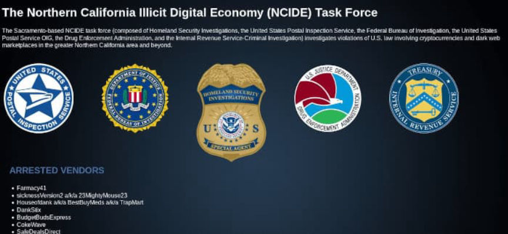
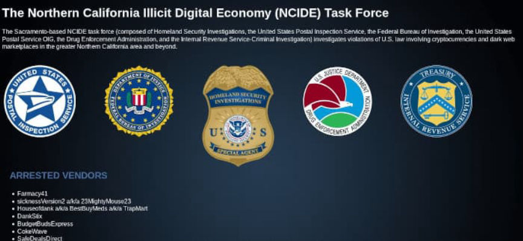

TheCommission Admits Selling Drugs on Empire Market
~2 min read | Published on 2021-12-20, tagged Darkweb-Vendor, General-News, Pleaded-Guilty using 433 words.
A California man admitted selling drugs through a vendor account on Empire Market.
Hunter Daniel Secrest, 27, of California, and known co-conspirators operated a darkweb vendor account with the username “TheCommission.” Secrest and his co-conspirators used the vendor profile to distribute a wide variety of drugs to customers on Empire Market, including heroin, cocaine, methamphetamine, and Xanax. The guilty plea, which allows for a maximum sentence of 20 years in prison, covered one count of conspiracy to distribute narcotics.
[img=]The NCIDETF's onion service.[/img]
Secrest admitted to creating the vendor account on Empire Market in April 2020. Investigators from the Northern California Illicit Digital Economy (NCIDE) Task Force established that TheCommission had fulfilled more than 800 orders worth a total of more than $200,000 by June 2020.

Investigators arrested Secrest and his accomplices on June 27, 2020. They established that the defendants had sold or possessed with the intent to distribute a total of 752 grams of heroin, 45 grams of morphine, 11 grams of psilocybin mushrooms, 600 grams of cocaine, 277 grams of valium, 285 grams of alprazolam, 35 grams of Adderall, 1.6 kilograms of a substance with detectable amounts of fentanyl, and 93 grams of a substance with detectable amounts of methamphetamine.
On December 15, 2021, Secrest pleaded guilty to one count of conspiracy to distribute narcotics. His sentencing hearing is set to take place before United States District Court Judge John A. Mendez on March 22, 2022. Secrest could be sentenced to a maximum of twenty years in prison and a $1 million fine.
[DNL: Seems surprising such an accomplished vendor managed to catch and enter a plea to a single count of a drug crime.
Although the arrest warrant ordering Secrest was returned executed on June 27, 2020, some of TheCommission’s customers reported oddities as early as June 18 or 19.
One Dread user wrote:
The wickr account has been compromised as far back as the 19th at least. No response at all the 18th, then late on the 19th it was active and scamming people. Not sure if that was LE or not. The pack never sent.
The user added that the person in control of the Wickr account on June 19 also had access to the account on Empire. “I told him something during our convo that he posted on his Empire page.” TheCommission never shipped a package ordered on June 19, according to the customer quoted above.
One user wrote that after switching to the new Wickr, TheCommission” respond[ed] to product questions."
But in response to the above comment, another user wrote that he had no issues with TheCommission after switching to the new Wickr account.
Hunter Daniel Secrest, 27, of California, and known co-conspirators operated a darkweb vendor account with the username “TheCommission.” Secrest and his co-conspirators used the vendor profile to distribute a wide variety of drugs to customers on Empire Market, including heroin, cocaine, methamphetamine, and Xanax. The guilty plea, which allows for a maximum sentence of 20 years in prison, covered one count of conspiracy to distribute narcotics.
[img=]The NCIDETF's onion service.[/img]
Secrest admitted to creating the vendor account on Empire Market in April 2020. Investigators from the Northern California Illicit Digital Economy (NCIDE) Task Force established that TheCommission had fulfilled more than 800 orders worth a total of more than $200,000 by June 2020.

The NCIDETF's onion service.
Investigators arrested Secrest and his accomplices on June 27, 2020. They established that the defendants had sold or possessed with the intent to distribute a total of 752 grams of heroin, 45 grams of morphine, 11 grams of psilocybin mushrooms, 600 grams of cocaine, 277 grams of valium, 285 grams of alprazolam, 35 grams of Adderall, 1.6 kilograms of a substance with detectable amounts of fentanyl, and 93 grams of a substance with detectable amounts of methamphetamine.
On December 15, 2021, Secrest pleaded guilty to one count of conspiracy to distribute narcotics. His sentencing hearing is set to take place before United States District Court Judge John A. Mendez on March 22, 2022. Secrest could be sentenced to a maximum of twenty years in prison and a $1 million fine.
[DNL: Seems surprising such an accomplished vendor managed to catch and enter a plea to a single count of a drug crime.
Although the arrest warrant ordering Secrest was returned executed on June 27, 2020, some of TheCommission’s customers reported oddities as early as June 18 or 19.
One Dread user wrote:
The wickr account has been compromised as far back as the 19th at least. No response at all the 18th, then late on the 19th it was active and scamming people. Not sure if that was LE or not. The pack never sent.
The user added that the person in control of the Wickr account on June 19 also had access to the account on Empire. “I told him something during our convo that he posted on his Empire page.” TheCommission never shipped a package ordered on June 19, according to the customer quoted above.
One user wrote that after switching to the new Wickr, TheCommission” respond[ed] to product questions."
But in response to the above comment, another user wrote that he had no issues with TheCommission after switching to the new Wickr account.